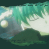
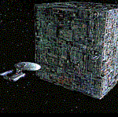
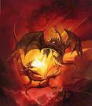

Forums galactiques > Taverne galactique : lieu de discussion informel > Le ring
Pages : 1 2 ... 13 14 15 ... 24 25
| Kyte Réputation à la taverne : 19  19/10 ETU 22:53 | Score : 0 Détails "Oui,moi!"
Dit Kyte,du haut des gradins. | ||
| Beth le cerf blanc Réputation à la taverne : 112  20/10 ETU 22:28 | Score : 0 Détails "Aaaahh...Cher kyte en route!"
Surement que ce tour impressionerait Kyte...Il fit trembler legerement la terre autour de lui. Il prit son sabre et frappa dans une faille que les tremblement avait fait la maigre faille devint noiratre on ne vit plus le fond.Il sortit le sabre qui était entouré maintenant d'une aura noire. | ||
| Ruis le corbeau Réputation à la taverne : 104  21/10 ETU 17:53 | Score : 0 Détails *L'ange rentra dans la salle lentement e passant ses doigts gantés sur les mur*
Cela faisait longtemps que je ne me suis pas battu ici. Beth accepte tu de combattre ?Ou bien quelqu'un d'autre, j'ai besoin de me sentire revivre. | ||
| Demettra Réputation à la taverne : 348  06/11 ETU 11:04 | Score : 0 Détails Up! le ring vous attend, à vos armes et que le meilleur gagne!
| ||
| jean luc picard Réputation à la taverne : 595  06/11 ETU 11:37  | Score : 0 Détails Picard s'avanca vers le ring, son intention se lisait sur son visage, il était là pour se battre...
Il se mit face à son adversaire qu'il salua sans pourtant le quitter du regard, puis le Gong retentit... -"tu vas regretter de m'avoir rencontré!" c'était parti, Picard sauta sur son adversaire et à la surprise de celui-ci changea de garde avant de lui assener un crochet du gauche OUCH ! dans un bruit sourd, le poing s'ecrasa sur l'arcade et le sang jailli... -"et prends ça !" picard enchaina sur un uppercut d'une violence inoui! son adversaire à terre et en sang avait tourné de l'oeil -"l'oeil au beurre noir vaut mieux le faire que l'avoir" dit Picard. mais déjà sont adversaire se releva.... | ||
| Ruis le corbeau Réputation à la taverne : 104 10/11 ETU 19:28 | Score : 0 Détails Jean-Luc,mon ami !Que diriez vous d'un combat ?Magie autorisée.
| ||
| Beth le cerf blanc Réputation à la taverne : 112 22/11 ETU 13:58 | Score : 0 Détails Allez Danny Zuko amene toi!
| ||
| Yoh Réputation à la taverne : 390  22/11 ETU 14:06 | Score : 0 Détails Un jeune garçon entra,un katana dans chaque main.
Il semblait complètement détendu,absolument pas stressé. Il avait même l'air d'être somnolent... "Hey!Toi,là,avec la clé géante! Ca te dit un petit combat contre moi?" | ||
| Beth le cerf blanc Réputation à la taverne : 112 22/11 ETU 14:34 | Score : 0 Détails (HRP//:Arrete!Tu est aveugle ou tu a pas vu mon message d'avant ici ou a l'assemblée!Je suis censé me battre contre Danny pas contre toi!...//HRP)
"Non merci...Danny vien te battre!" | ||
| Yoh Réputation à la taverne : 390 22/11 ETU 14:35 | Score : 0 Détails [HRP]Effectivement,j'avais pas vu,désolé^^
Mais on dirait que ton adversaire n'est plus là par contre...[/HRP] | ||
| lafouine Réputation à la taverne : 0  22/11 ETU 15:28 | Score : 0 Détails lafouine arriva enfilant sa veste noir.
-qui accepte de ce battre avec moi?? | ||
| lafouine Réputation à la taverne : 0 22/11 ETU 15:30 | Score : 0 Détails Il retira son épée des élèments de son foureau.
| ||
| Yoh Réputation à la taverne : 390 22/11 ETU 15:54 | Score : 0 Détails Yoh descendit des gradins...
"pourquoi pas?" | ||
| lafouine Réputation à la taverne : 0 22/11 ETU 18:26 | Score : 0 Détails lafouine monta sur sur le ring et s'envola aussitôt!
-alors,je t'attend!! (son épée se transforma en arc) | ||
| Yoh Réputation à la taverne : 390 22/11 ETU 18:33 | Score : 0 Détails Yoh esquissa un sourire...
Il tendit ensuite sa paume gauche vers son adversaire, et un éclat lumineux brilla dans sa main. Il récita une formule redoutable,à n'en pas douter... "Ras Tel Ma Scir Magister... Undecim Spiritus Lucis,Coeuntes Sagittent Inimicum! Undecim Sagitta Magica! Series Fulguralis! 11ème esprit de la lumière,unis-toi à nous et ddécoche tes traits sur les ennemis! Onze flèches magiques de foudre!" Onze flèches d'éléctricité jaillirent de sa paume,ciblant Lafouine. | ||
| lafouine Réputation à la taverne : 0 22/11 ETU 20:46 | Score : 0 Détails lafouine esquiva 10 de ces flêches mais 2 le touchère de plein fouet!
(lafouine était un peu afaiblie mais pas assez pour se fair batre!) il se transforma en dragon avec une grosse épée de feu pui il la lanca a toute vitesse vers YOH qui ne semblait pas surpris! | ||
| Sandor Darhan Réputation à la taverne : 1019  22/11 ETU 21:19 | Score : 2 Détails
Sandor Darhan arriva au centre du ring. Personne ne l'avait invité et il était super énervé!!! Il tourne sur lui-même, enlevant son masque et use de son arme SUPREME! Son arme supreme : c'est sa gueule! Eh oui Sandor est vraiment le mec le plus immonde de toute la galaxie...on ne peut le regarder en face sans vomir...il est si moche avec sa face à demi-brulée, ses lèvres consumées par le feu sont flasques et des qu'il les bouge on dirait que sa peau va tomber comme si il avait la lèpre...mais c'est pas tout! En effet ses yeux globuleux sortent de leurs orbites comme si il était damné et il bave plus que dix chiens tous atteints de la rage.... ...Sa réputation de plus moche de la galaxie entraine déja un nombre de vomissement et de nausées plus qu'inquiétant, les filles pleurent rien qu'a entendre son nom, les jeunes ados trash en quête de sensation forte se regroupent dans des caves pour matter des photos de ses interventions au sénat galactique, la salle d'ailleurs a chacune de ses apparitions se vide toujours inéxplorablement... Même le plus pauvre clochard de la galaxie peut trouver un petit instant de bonheur en pensant " Au moin j'ai pas la gueule de Sandor Darhan!" Il est moche Il est laid Il pue A sa vue tous les adversaires alors en lice tombent par terre et s'enfuient en courant, dans les gradins les spectateurs vomissent les uns apres les autres.... Sa mocheté sourit...qui osera l'affronter? | ||
| Yoh Réputation à la taverne : 390 23/11 ETU 16:47 | Score : 0 Détails Ignorant le nouvel arrivant,Yoh continua de cribler lafouine de coups d'arcanes magiques.
Voyant ce dernier l'attaquer,il éxécuta une parade. "Ras Tel Ma Scir Magister... Flans Exarmatio! Neutralisation par le vent et les fleurs!" Un vent puissant repoussa l'attaquant,éteignant simultanément les flammes de son épée. Sans attendre la réaction de son adversaire,Yoh prononça à nouveau son aria: "Ras Tel Ma Scir Magister! Evocatio Valcyriarum,Contubernalia Gladiaria! Contra Pugnent! J'invoque les esprits du vent!! Compagnons d'armes qui maniez l'épée!Battez-vous de front!" Une cinquantaine de copies de Yoh faites de vent apparurent. Tous portaient une arme,que ce soit lance ou sabre. Chacune de ces copies se saisit de son bâton magique,et prit son envol vers leur cible,armes tendues. | ||
| lafouine Réputation à la taverne : 0 23/11 ETU 20:06 | Score : 0 Détails lafouine esquiva les coups de YOH et de ses clones.
lafouine était rusé il prononcat des parole: MAITRE TTJTRY ZREFG GURI GDUD VIENS EN MOI!!! lafouine fit apparaitre un géant marteau orange et noir avec des piques rouges. puis lafouine foncat sur YOH lanca sont marteau de toutes ses forces suivi de boules de feu,glaces,foudres. (n'oublions pas que lafouine était encore un dragon) | ||
| Yoh Réputation à la taverne : 390 24/11 ETU 15:26 | Score : 0 Détails "Ras Tel Ma Scir Magister!
Flet,Une Vente! Flans Saltatio Pulverea! Souffle,ô vent! Danse et pulvérise par le vent et les fleurs!" La tornade souffla les rafale d'énergie, mais le marteau ne fût pas dévié en raison de son poids... Voulant se protéger,Yoh dégaina rapidement son sabre, qui semblait ordinaire malgré les symboles gravés sur la lame. Yoh tendit le katana devant lui,et à la seconde où le marteau allait le percuter,la lame se mit à irradier de lumière. "Harusame no Maï! La Danse de l'épée de Lumière!" Une onde de choc lumineuse frappa le marteau de plein fouet,le freinant dans son élan. |
Pages : 1 2 ... 13 14 15 ... 24 25
Forums galactiques > Taverne galactique : lieu de discussion informel > Le ring